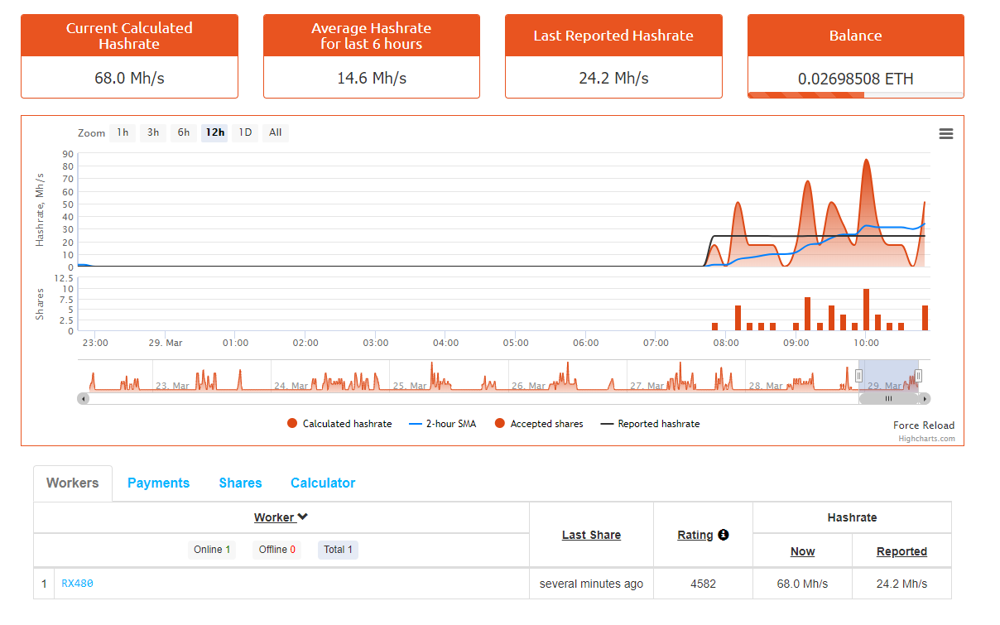

Да започнем с Ethereum Mining сега е по-лесно от всякога. Всичко, от което се нуждаете, е Графично обработващо устройство (Видео карта). По същество това е чип, поставен в компютър, който трябва да показва ресурсно интензивна графика (например хардкор игри). По този начин можете да започнете да печелите пари!
Wallet (на български портфейл) е мястото в което ви седят дигиталните валути, Има 4 вида Walletи - Paper Wallet, Hot Wallet ,Hardware Wallet, WEB Wallet най сигурни са Hardware Walletите и Paper Walletите(правилно генериран) , защото те се генерират offline. Уеб портфейлите стопанисват вашите валути. Това означава, че е възможно те да загубят парите ви след всеки инцидент от тяхна страна. До ден днешен няма уеб портфейл услуги предоставящи достатъчна застраховка, за да се използват за съхраняване на стойности като банка.
Това са едни от най-използваните walletи
След като си направите Wallet копирайте публичния ви адрес, който е в подобен на този формат 0xDA313464103B0Dbfe7Fe92061DFf5655853dd8c4
Софтуера за Mining е конзолна програма, чрез която "коапаем". Софтуера за копане обикновено зависи от хардуера производителя на графичния ви чип (Nvidia или AMD) Най добрите софтуери за Ethreum mining са:
Poolовете (на български басейни) са група от Minerи, който добиват криптовалута заедно, по този начин по бързо се намират блокове и плащанията стават според получените от poolа shareове, Minerа с най-много shareове получава най голяма награда, когато някой miner от този pool открие блок. Най пополярните poolове са:
За да започнете да копаете трябва разархивирате архива със софтуера за копане след това намерете start_only_eth.bat и кликнете десен бутон и след това edit:
След това въведете
Както е показано
След като запазите bat файла го пуснете
След време ще видите съобщения SHARE ACCEPTED! в зелено - това означава че сте изпратили share в poolа
20 минути след намерен share в Web сайта на poolа, за който копаете ще ви се появи баланс и статистика за hashrateа можете да сметнете и колко пари ще изкарате дневно тук.
